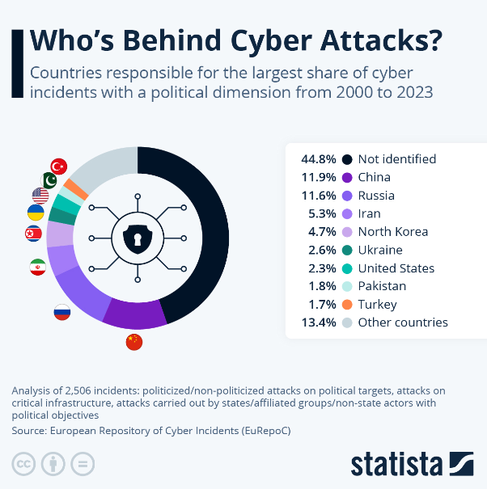
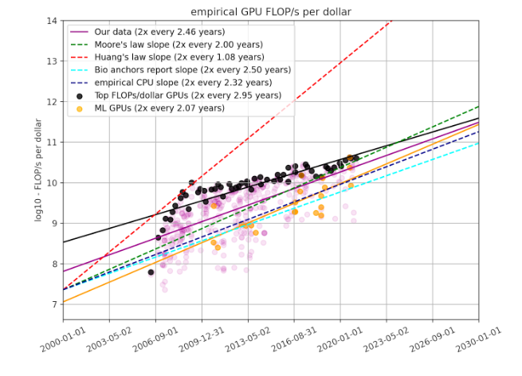
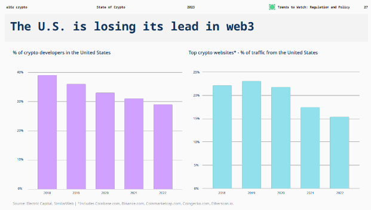

Assume that all the arguments made thus so far in this essay are false. Perhaps OpenAI has already achieved AGI internally, and is simply hiding it from the public, much like the government may be hiding sentient aliens. Or, there is indeed a breakthrough coming in hardware that will reverse the trend in hardware capacity, or new algorithmic research will improve compute to where everyone will have their own conscious AGI. Even if all of these things happen, it is highly unlikely that any government will pursue complete nationalization or centralization.
“A specter is haunting the modern world, the specter of crypto anarchy” - Timothy May in the Crypto Anarchist Manifesto
Much like the quote above predicts the rise of an anarchical movement resting on the development of cryptography, a fundamental tenet espoused in Situational Awareness is the idea that war is coming on the backs of AI, with the AI race soon becoming an arms race. Rather than the specter of cryptographic technologies, nation states are being faced with the reality that the most powerful technology created in the entirety of human history may end up outside their control, or worse, in the hands of their economic adversaries. Aschenberner makes an apt comparison to the nuclear arms race, suggesting that the potential advantage of whichever country reaches AGI first will have an advantage comparable to the advantage experienced by the United States post World War II.
However, this is under the assumption that a massive increase in productivity (which is ultimately the promise of software-based AGI) will be such a threat to human life that governments will be forced to not only accelerate, but regulate it in order to protect their own citizens and ensure that this power does not fall into the wrong hands. The truth is: we have already lived through a similar phenomenon. The proliferation of the internet and social media networks in the late 2000s and early 2010s was arguably leveraged for political means far more than AI could ever be. Wars were no longer fought using steel and ammunition, but rather using misinformation campaigns and malicious hacks carried out by unidentified figures.

Cyber-war breakdown from Statista
Yet, the United States Government (USG) has not nationalized the social media, or the internet, at least not in the traditional sense. A similar phenomenon is likely to occur in AI.
An unlikely parallel to the crypto wars of the 90s
The inclusion of Timothy May at the beginning of this particular section was not by accident; after all, May was one of the core figures in the cypherpunk movement that ultimately birthed Bitcoin, cryptocurrencies, and Web3. But, perhaps less famously, it was also the birthplace of many an idea in cryptography, privacy, and more. It is during this time period, in the early 90s, that the cypherpunk movement was the most prominent entity standing against the “war on crypto”, a proverbial term describing the USG’s attempts to restrict the export of privacy-preserving technologies to ensure that they did not fall into enemy hands.
Cryptographic protocols were soon declared munitions: creating and distributing a new privacy algorithm or anonymous email protocol online could carry the same charges as helping to move physical weapons over international borders. Perhaps notable victim of this was Phillip Zimmermann, the inventor of PGP, who over a three period was submitted to federal investigations by the USG. However, after a period of time, the USG eventually relented, both due to the difficulty of regulating what was essentially distributed open-source software and the impact that strict regulation had on for-profit entities (we will discuss why capitalistic needs almost always call for reduced regulation in the next subsection). Cryptography was, for the most part, free for use by all, and the government even stepped in to fund or develop open-source, privacy-preserving technologies. Tor, probably the most widely used privacy-preserving technology in the world, was developed by a group of independent computer scientists and researchers working for the USG Naval Research Laboratory.
So, what does this have to do with the possibility of frontier lab nationalization? Are these just the ramblings of a crazed free-market enthusiast? The key abstraction here is that foundational models are ultimately software, and software, like speech, is extremely difficult to regulate. The future in which a government such as ours is necessitated to nationalize or meaningfully impose its will on the development of AI is one in which both algorithmic and computational efficiency have increased to the point where the possibility of AGI is imminent. This is extrapolated from the main claims in Situational Awareness; AGI by 2027 is a possibility under the assumption that we get growth in hardware and algorithms that match, if not outpace, what we saw over the past three years. Yet, a future in which this occurs is also a future in which access to hardware is democratized, and most frontier algorithms that are published can be built and iterated upon by independent open-source scientists. Indeed, we can apply the same “straight-line” graph argument to show that if we assume hardware efficiency continues increasing at the rate that it has maintained over the past 2 years (a rate of growth aptly termed “Huang’s Law”), then we will soon have highly-performant GPU clusters at a somewhat affordable price.

Graph from EpochAI predicting FLOP/s per dollar
In this scenario, hardware will be so ubiquitous that regulating AI will be seemingly impossible without causing substantial damage to larger businesses that will end up being the only ones to abide by them. It is hard to imagine a scenario in which the tech giants will be content with the open-source hobbyists ultimately outpacing them in AI, just like they weren’t content with independent cryptographers outpacing them in implementing secure cryptographic protocols.
Capitalism ultimately prevails
More often than not, when it comes to new technologies, capitalism, and more specifically, the freedom to innovate, ultimately prevail. They are what allow one country to gain a technological lead over another, outweighing other aspects of economic production, such as the cost of labor or availability of natural resources. The United States has consistently outpaced its rivals in technological development post World War II not because of its abundant talent or great natural industrial resources (though they have certainly helped), but because it has fostered a culture of innovation through incentives, comparatively regulation, and sparse opportunities for talented individuals with ideas or concepts to create companies of value. It is this form of incentive-based innovation that has allowed private companies and startups to outpace their academic contemporaries.
The USG has succeeded specifically because it has allowed new technologies to grow without imposing unnecessary regulations: AI is no different. This also applies to any strategic advantage that the U.S. may be seeking against its potential adversaries. Had the USG decided to regulate computers, the internet, social media companies, and search in the name of preserving national security, we may have seen China or some other authoritarian power become the default capital of the internet, and may be referring to Shenzhen rather than Santa Clara as Silicon Valley.
As Aschenberner describes in part three of Situational Awareness, a future in which the majority of AI research and development is done behind the closed doors of government-sanctioned facilities is one that will most likely lead to the US preserving its current academic/theoretical lead, at least for the short-term. However, this will soon dissipate. Modern frontier technologies are not developed in bubbles but rather through open, economic-based platforms. The majority of OpenAI’s largest customers are not members of the public sector, but rather large companies and startups seeking to use AI in their own workflows. The release of ChatGPT in 2022 put forth an entire economy, mostly located in San Francisco, of a large collection of organizations and companies leveraging it for different use-cases. AI research has also become increasingly private; most of the world’s foremost AI researchers are not working in academia, but rather on the research teams of large corporations such as Google, Meta, or Tesla. Indeed, the aforementioned three companies have arguably produced and done more for the development of technology over the past decade than the entirety of the USG put together (and the USG is happy about this!); it seems unlikely that curtailing their attempts to advance the state of AI research forward will lead to a positive outcome. In a manner similar to the development of another frontier technology, cryptocurrency, a large proportion of open-source AI developers are not constrained by national origins or boundaries. In fact, recent trends in the development of cryptocurrency and Web3 seem to pose the perfect example of what can happen when the USG decides to overregulate a particular industry: developers, businesses, and capital flows elsewhere where it is more likely to be accepted, and the U.S. as a whole falls behind.

Graph from A16z’s state of crypto report in 2023
If AGI is to truly become an existential threat, then it is of upmost importance that we (again, we being the collective United States and its citizens) win the figurative race with our competitors to get there first. This is something I completely agree with Situational Awareness on: a world in which an authoritarian regime wields control over AGI is not a world in which the U.S. will reign supreme for long. However, the path there is not through nationalization and regulation; rather, it is through providing support and incentives to the innovators, the builders, the startups that are building and accelerating this technology. Aschenbrener argues that the equivalent of allowing independent labs and startups to pursue AGI is the equivalent of allowing Uber to build nuclear reactors. However, we are no longer living in WWII: the public sector has fallen behind private development for decades, and now, even its strongest branches are reliant on technologies developed by for-profit companies (take the relationship between SpaceX and NASA for example). This model has enabled the U.S. to dominate the development of other technologies for the vast majority of recent technological cycles, and it will remain the same for AI.